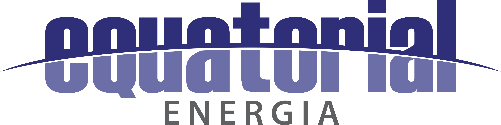

Interrupção de energia
Galhos em contato com os fios podem comprometer o fornecimento.

Você +Seguro Começar jornadaA natureza faz parte da nossa vida. Aprenda a reconhecer os riscos da vegetação próxima à rede elétrica e descubra como proteger a sua comunidade.
Começar jornadaAs árvores trazem sombra, beleza e qualidade de vida. Cuidar da vegetação urbana também significa planejar seu crescimento.
Quando cuidamos de uma árvore, cuidamos dos espaços onde a vida acontece.
Quando a vegetação se aproxima da rede elétrica, o risco deixa de ser só da árvore. Ele chega à nossa casa, à nossa rua, ao nosso bairro.
Galhos em contato com os fios podem comprometer o fornecimento.
Tocar na árvore ou usar ferramentas perto da rede pode ser perigoso.
A queda de galhos pode atingir a rede, pessoas e imóveis.
Uma situação de risco pode afetar toda a comunidade.
Galhos muito próximos ou encostando nos fios merecem atenção. Não espere que o problema aconteça.
Não tente realizar a poda por conta própria. Mantenha distância e procure orientação.
Uma comunidade bem informada faz a diferença. A prevenção começa antes do acidente e começa com você.
Não toque nos fios nem tente cortar ou afastar galhos próximos à rede elétrica.
Ligar para a Equatorial - 116Agora que você conhece os riscos, vamos testar seus conhecimentos?
O cuidado começa com você.
E cresce quando a gente
compartilha.
Convide seus vizinhos, escolas e associações a conhecer a campanha. Um bairro mais consciente se constrói com pequenas atitudes, todos os dias.
Reconheça árvores próximas à rede, mantendo distância.
Convide alguém para completar as três missões.
Compartilhe os canais e as atitudes corretas.
Poda Consciente é uma proposta educativa que busca fortalecer a conscientização sobre os riscos da vegetação próxima à rede elétrica, incentivando atitudes preventivas e uma comunidade mais informada.
Uma proposta complementar, conectada conceitualmente ao movimento Você + Seguro, da Equatorial Energia.